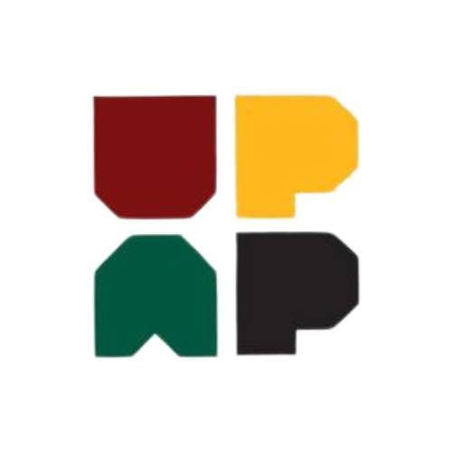

tinyurl.com/SAGExUPAP2026
Scan to open the Tournament Hub on your phone

×

UP Alumni Pickleball Community
0-0-3
3rd Annual Tournament
Sunday, 22 November 2026
The Foundry · Cainta, Rizal
Find your pair's full match schedule — every round, every opponent, in order.
Select a tournament day above to load its matches and standings.